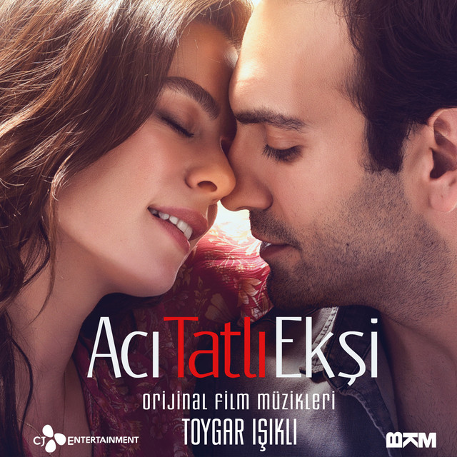
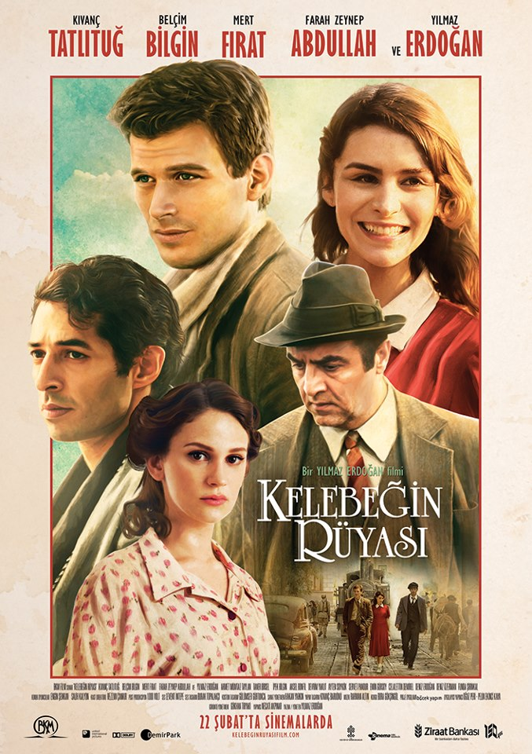

THE DOMESTIC ROMMANCE MOVIES THAT I RECOMMEND TO YOU

Acı Tatlı Ekşi(2017)
Murat (Bugra Gülsoy) and Duygu (Özge Özpirincçi), who have been together for many years, now seem to be the next step in marriage, so Murat proposes to Duygu. However, he rejects this offer, saying that he is not ready, and the two part ways, signing an agreement that promises that they will get married if they are still alone after 5 years. after 5 years, Duygu, who is now ready to get married, finds Murat, but Murat has built a completely different life for himself and is preparing to marry someone else.
Stars: Özge Özpirinççi / Duygu --- Buğra Gülsoy / Murat --- Gözde Türkpençe / Eliz --- Yusuf Akgün / Alper
IMDB Rating: 6.0/10

Kelebeğin Rüyası(2013)
Two young poets Rüştü Onur and Muzaffer Tayyip Uslu, who live in Zonguldak, continue their official lives in this newly modernized miner's city, while they live in art, literature and, most of all, poetry. While the young Republic, which has just got up on its feet, is trying to modernize on the one hand, a fierce war is taking place in Europe in the same years. With the arrival of the Mayor's daughter Suzan back in Zonguldak, Rüştü and Muzaffer's faith in poetry increases even more. Suzan, who is still a high school student, becomes close friends with the two teenagers, despite the reluctance of the environment.
Zeynep is a woman who is happy with small things and lives in the small order she established with her brother. Can is a surgeon who is connected to his job who is a professor at a young age. Can and Zeynep, who seem to have nothing in common, will fall into eternal love when they suddenly and unexpectedly enter each other's lives, but this love brings with it very difficult obstacles to overcome...
Stars: Fahriye Evcen / Zeynep --- Murat Yıldırım / Can --- Filiz Ahmet / Bade --- Fatih Al / Tufan